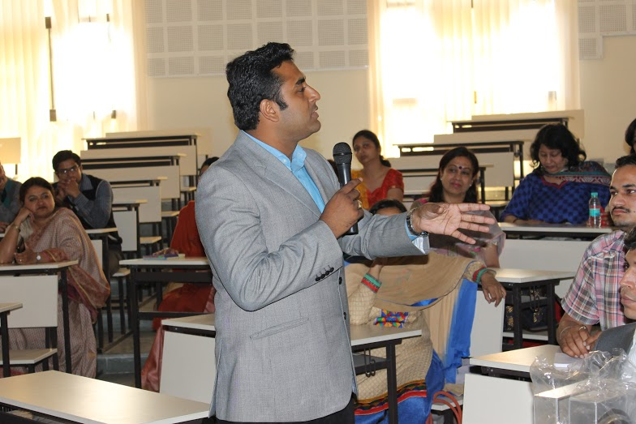

<div id="single-portfolio">
	<div id="portfolio-details" class="container">
		<a class="close-folio-item" href="#"><i class="fa fa-times"></i></a>
		
		<div class="row">
			<div class="col-sm-9">
				<div class="project-info">
					<h3> WORKSHOP ON AWARENESS AGAINST DRUG ABUSE </h3>
					<p>An interactive workshop on awareness against drug abuse was held by the Counselling Cell in collaboration with the Narcotics Control Bureau Uttarakhand.
                        The workshop's primary goal was to educate and to provide a much needed awareness to the young minds about the dangers and the social implications that are brought about the drugs.</p>
					<p>The workshop was attended by a large number of students of the institute,its Saharanpur campus and the teachers of Army Public School(APS 1).The workshop was headed by Mr.R.K Rana,Superintendent NCB Uttarakhand. The DOSW Mr. D.K. Nauriyal and ADOSW Mr. Inderdeep Singh were also present.The session started with an introductory talk by the student councillor Mrs. Shikha Jain. The talk was continued by Mr. R.K. Rana.</p>
                    <p>The workshop was well received by the participants and it is hoped that they have been properly equipped with the correct tools to combat the issue of drug abuse.</p>
				</div>
			</div>
			<div class="col-sm-3">
				<div class="project-details">
					<h3>Event Details</h3>
					<p><span>Date:</span> 21st March, 2015</p>
				</div>
			</div>
		</div>
	</div>
</div>
